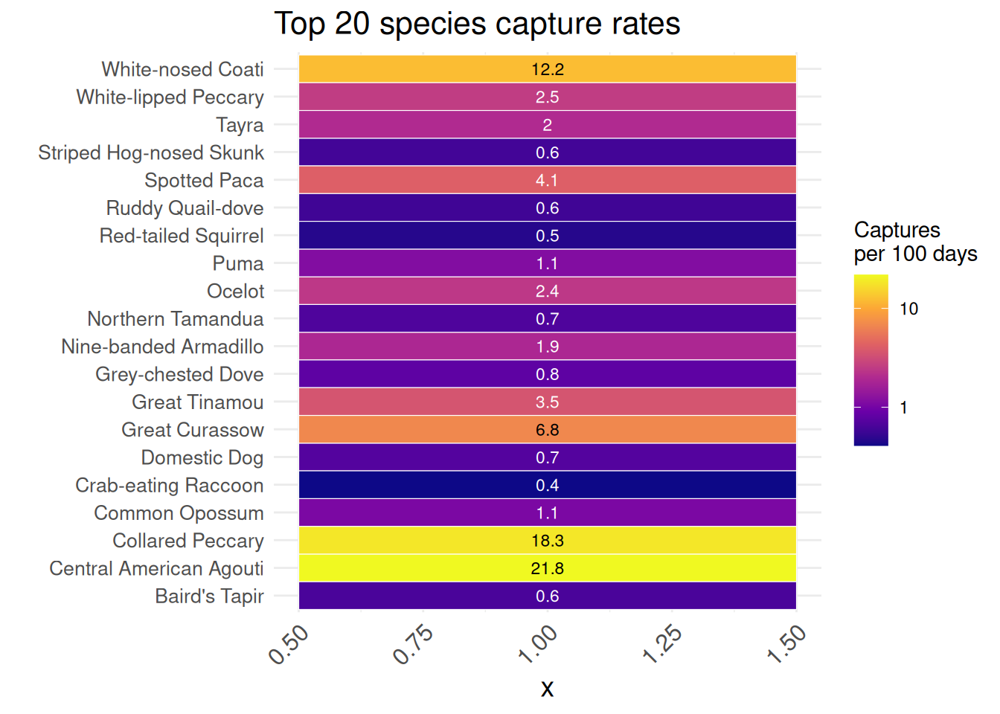

8 Long Term Monitoring
Introduction:
The following represents the data exploration for the data collected for the project:
To date we have deployed 342 cameras, at 27 locations. Resulting in the capture of 61148 wildlife images of 117 species.
Fist take a look of the chronology of the deployments:
Which results in 59885 identifiable wildlife images of 74 species. Including 35 Mammals and 35 Birds.
Now, we goint to check the results bases of independent records:
This resulted in 19438 independent detections of wildlife. The total number of detections and proportion of cameras detected at are as follows:
Here goes the full list of species
How is the distribution of Threatened species in our records?
Check the number of records and the occupancy
For the top twenty detected species, the treatment-specific capture rates are as follows:
